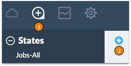

Toggle Menu
Apply a State
In
SaltStack Enterprise Web Console
, click Jobs and then add a new job.

Upload a state file and select the
Minion-side state file
type.
After you apply this job, the targeted Salt Minions execute the specified execution module.
Next